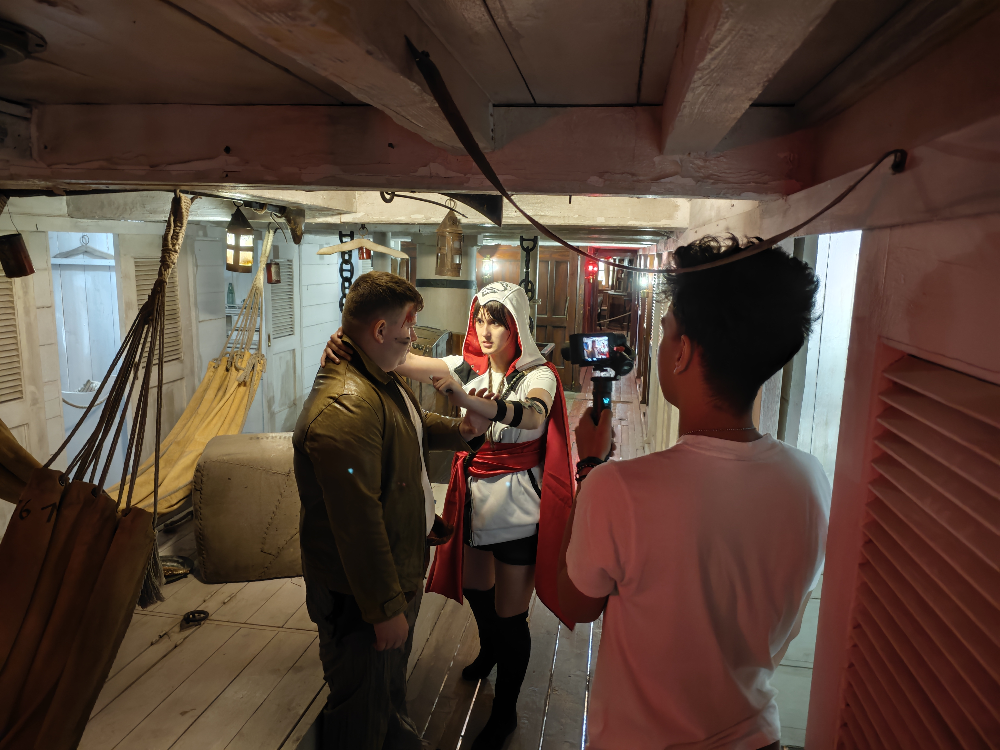
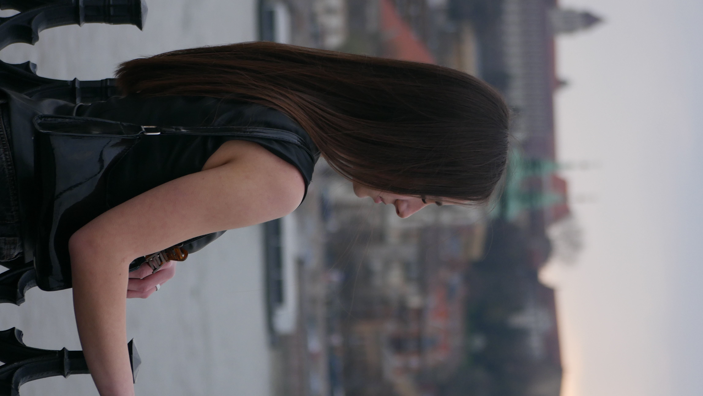
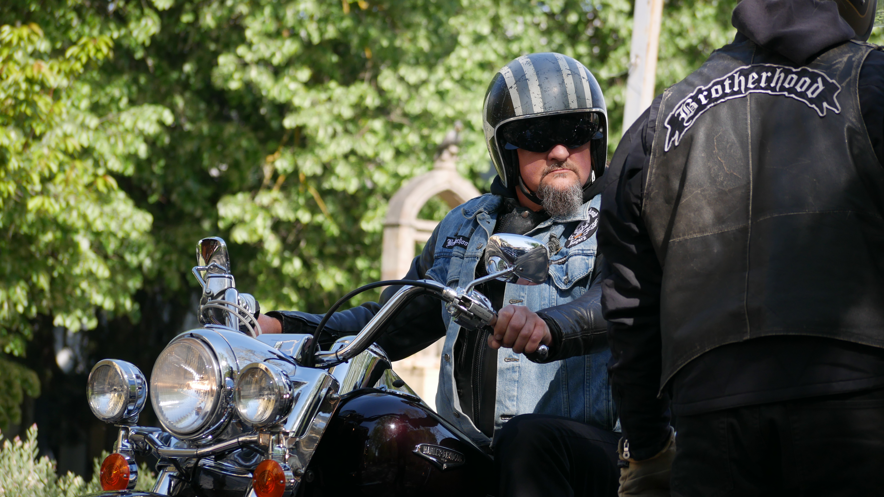
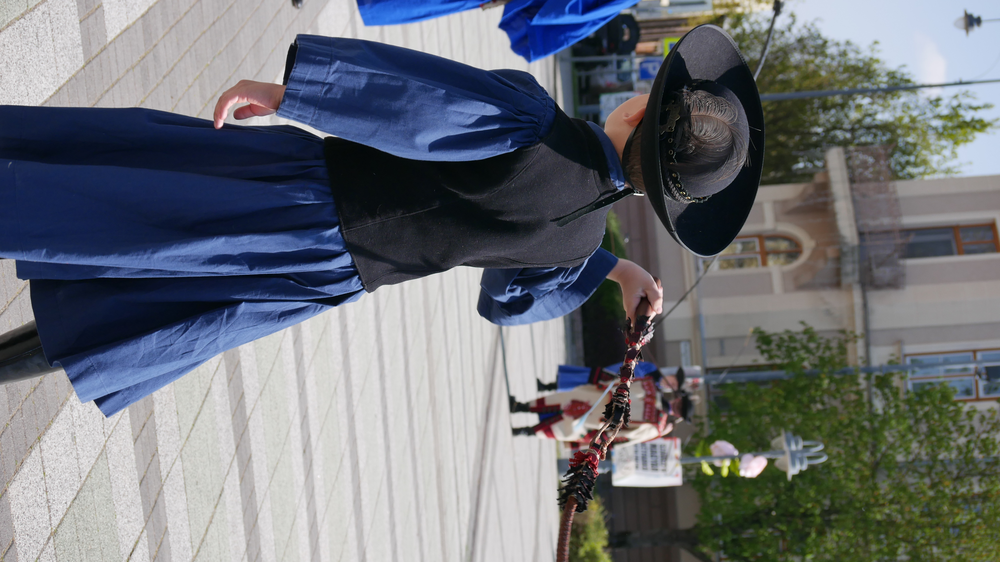
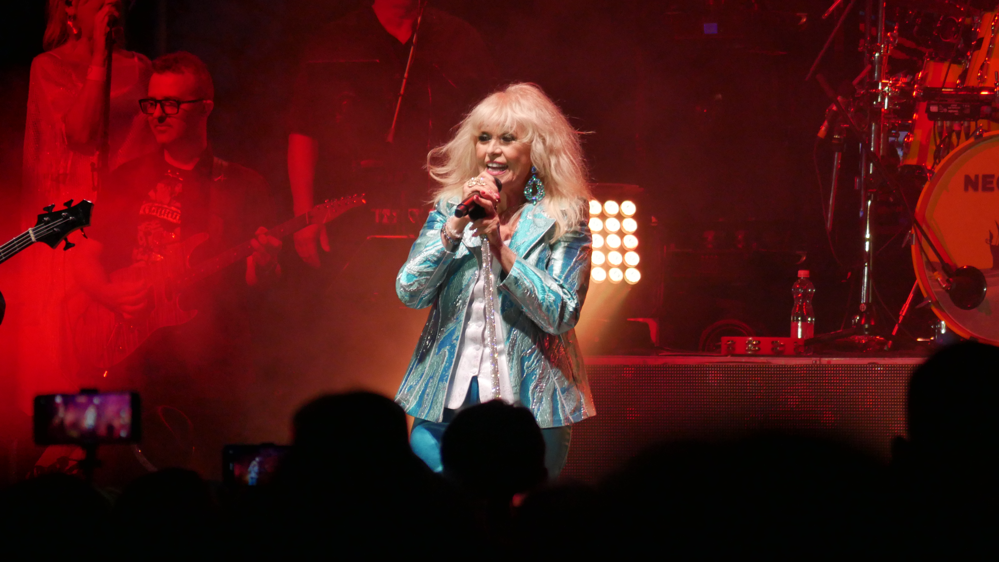
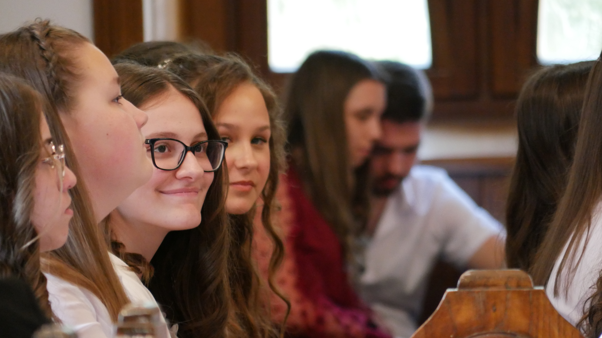

Fotózás
Portrék, rendezvények, koncertek és egyedi kreatív sorozatok nagy felbontású, művészi kidolgozással.
Portré · Esemény · KoncertPillanatok, amelyek üvegtisztán megmaradnak.
A Glass Moon Studio képei emberekről, helyekről és eseményekről szólnak. Nézd meg a galériát, az események albumait és a videókat.


A Glass Moon Studios azért született, hogy a pillanatnyi benyomásokból időtálló vizuális történeteket alkosson. Hiszünk abban, hogy egyetlen jól komponált képkocka vagy filmszerű snitt képes átadni mindazt, amit szavakkal nehéz megfogalmazni.
Legyen szó portréfotózásról, lendületes rendezvényfilmekről vagy komplex, forgatókönyvre épülő kisfilmekről, a legmodernebb utómunka-technikákkal és egyedi képi világgal dolgozunk.
Mozifilmes fényelés, dinamikus kameramozgás és mélység.
Precíz vágás, hangdizájn és karakteres színvilág.
Teljes körű vizuális produkció az első ötlettől a végső fényelésig.
Portrék, rendezvények, koncertek és egyedi kreatív sorozatok nagy felbontású, művészi kidolgozással.
Portré · Esemény · KoncertDinamikus eseményvideók, promóciós anyagok és imázsfilmek stabilizált, tűéles képi világgal.
4K · Imázs · AftermovieNarratív rövidfilmek, tematikus alkotások és vizuális történetek rendezése drámai fény-árnyék játékkal.
Rövidfilm · Narratíva · Rendezői látásmódKoncepcióalkotás, látványtervezés, helyszínkeresés és teljes vizuális arculat felépítése.
Koncepció · Látvány · TervezésRitmusra hangolt vágás, professzionális color grading (színkorrekció), hangkeverés és vizuális effektek.
Color Grading · VFX · Sound



A mozgókép az, ahol a hangulat igazán életre kel. Fedezd fel YouTube csatornánkon a legújabb rövidfilmeket, esemény-összefoglalókat és kreatív projekteket.
YouTube csatorna megnyitásaEsemények betöltése...
Van egy filmes ötleted, eseményfotózásra van szükséged, vagy kreatív vizuális tartalmat tervezel? Írj nekünk bizalommal!